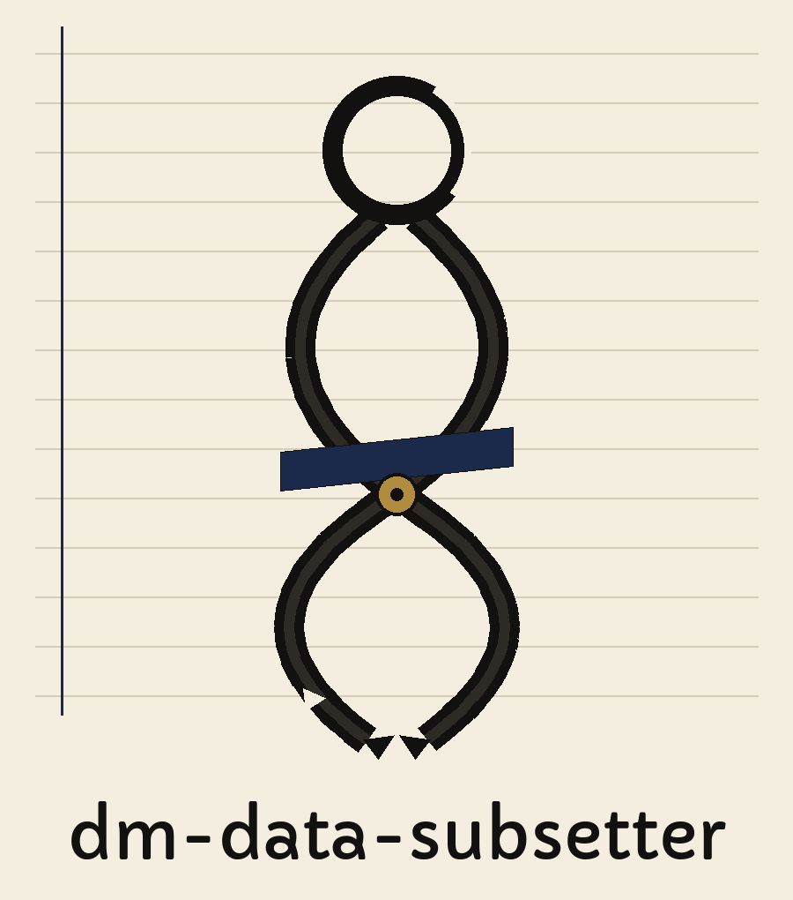
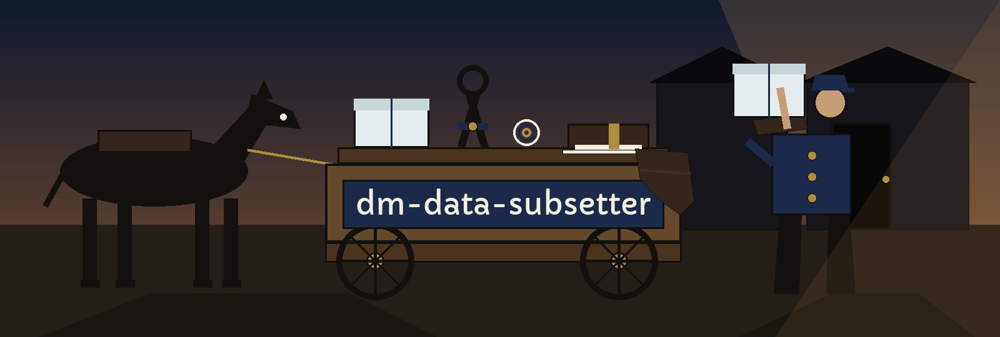

dm-data-subsetter: The Iceman's Shoulder Pad
Wherever this site names itself, it uses the joined form dm-data-subsetter: The Iceman's Shoulder Pad, repository first, theme second. The page is built like the book a roundsman carried: one ruled column per stop, and the stops in round order. Weigh the block, load the cart, carry it to the door, get the signature.


Rows to Include Stratify by These Columns
Never Set It Back on the Stock
Stop one: weigh the block
Round marker
Out of a larger dataset the program cuts a subset that still stands for the whole: statistically representative, with the relationships between the data kept intact. Stratified sampling does the cutting, keyed on key fields, so distributions stay faithful to the parent stock. Pandas and NumPy do the hauling underneath. The family sentence the README carries closes the stop: the tool sits among tools designed to generate or mask sensitive data with realistic looking but meaningless values. Not one row out of anybody's dataset is printed here, not one column name, not one count, here or anywhere else on this site.
Recorded gap: Pandas and NumPy are relied on in the description sentence, and neither one is named in any install step anywhere in the source. The dependency reaches a reader through the description alone. That gap is recorded here as a gap, not filled.
Stop two: fetching the code, with one repair on the route
git clone https://github.com/ShadowGuard-AI/dm-data-subsetter
Correction, labelled openly: the line above is a correction. The address the README itself prints points at a predecessor organisation, ShadowStrikeHQ, so a caller who follows the printed line to the letter knocks at the wrong door. The mended line gives the organisation name with its hyphen, ShadowGuard-AI. Nobody dresses the mended line up as the original wording, and the original stays standing in the preserved record at the foot of this page.
Stop three: the shape of a call, and no step further
./dm-data-subsetter [params]
Program name out front, bracketed parameters behind. That shape is all the source gives. No worked call exists in the source. No input file gets named there, and no column gets named there, so the ruled lines of this stop stay empty on purpose instead of being filled with an example somebody invented on the spot.
Stop four: the controls, in the order the record hands them over
Help leads: -h, the flag that shows the help message and exits. Then --subset_size, the number of rows to include in the subset, a plain count. Then --stratify_by, a list of column names to use for stratified sampling. Then --random_state, the random state for reproducibility. Then --mask_columns brings up the rear, a list of column names to mask with fake data. The two list flags stay lists on this stop and the size flag stays a plain count, worded the way the source words them.
Absence, printed at full size: --random_state carries no default in the source, so no default is printed here. What an unset state does is left for the program itself to say.
Absence, printed at full size: --subset_size has no stated floor, no stated ceiling, and no stated behaviour for a count larger than the rows on hand. Nobody on this page guesses a unit, a floor, or a ceiling for it.
Absence, printed at full size: --stratify_by names key fields, and the source does not say what follows when a named column is missing from the load. That outcome is absent from the record and stays absent here.
The second duty of the tool stands on this stop in full: --mask_columns masks the columns a caller names, with fake data. The theme entry never mentioned that work. The live record insists on it, so it stands here at the same size as every other control.
Stop five: the output guard, given the whole doorway
Refused
Never Set It Back on the Stock
The output file must not be the input file. Name one file for both jobs, under any spelling that resolves to the same path, and the run is refused at exit 1 before a single write happens. Put the way the round puts it: a cut block never gets set back down on top of the stock it was cut from, because tomorrow's round loads from that stock.
Stop six: two licence facts on separate pages of the book
Page one: the repository LICENSE itself, MIT terms. Its holder is described by outline only: the pen name in two words, a given name shortened inside brackets, the handle in parentheses after. The full wording of that holder line is not reproduced on this page. Clasp: brass.
Page two, marked as a site correction: the README closing line, respelled with today's hyphenated organisation in place of the predecessor name the published line used, reads: Copyright (c) ShadowGuard-AI. Site correction.
Stop seven: the round book
Stratify stop marker
This book sorts callers the way a roundsman sorts doors along a street, and no sibling site borrows the habit.
Weigh first, for the caller who came asking about proportion: the stratify entry. Key fields, distribution fidelity, relationships preserved: a smaller block cut so the balance of the whole stock survives inside it.
Count second, for the caller who came asking about size: the subset entry, a number of rows, with no figure invented to sit beside the flag.
Chance third, for the caller who wants a draw they can repeat: the random state entry, its default honestly left unprinted, as the source leaves it.
Cover last, for the caller who needs a column hidden: the mask entry. Columns the caller names themselves, masked with fake data. Work the theme entry never mentioned, and the live record insists on.
A teacher carrying a class extract, an analyst carrying a sample, an engineer carrying a test set: each one signs for the entry they walked up for, the book takes the signature down, and the tongs move on to the next door.
The preserved README record
 # dm-data-subsetter Creates a statistically representative subset of a larger dataset while preserving data relationships. Uses stratified sampling based on key fields to maintain distribution fidelity. Relies on Pandas and NumPy. - Focused on Tools designed to generate or mask sensitive data with realistic-looking but meaningless values ## Install `git clone https://github.com/ShadowStrikeHQ/dm-data-subsetter` ## Usage `./dm-data-subsetter [params]` ## Parameters - `-h`: Show help message and exit - `--subset_size`: Number of rows to include in the subset. - `--stratify_by`: List of column names to use for stratified sampling. - `--random_state`: Random state for reproducibility. - `--mask_columns`: List of column names to mask with fake data. The output file must not be the input file. A run that names the same file for both, in any spelling that resolves to the same path, is refused at exit 1 before any write. ## License Copyright (c) ShadowStrikeHQ